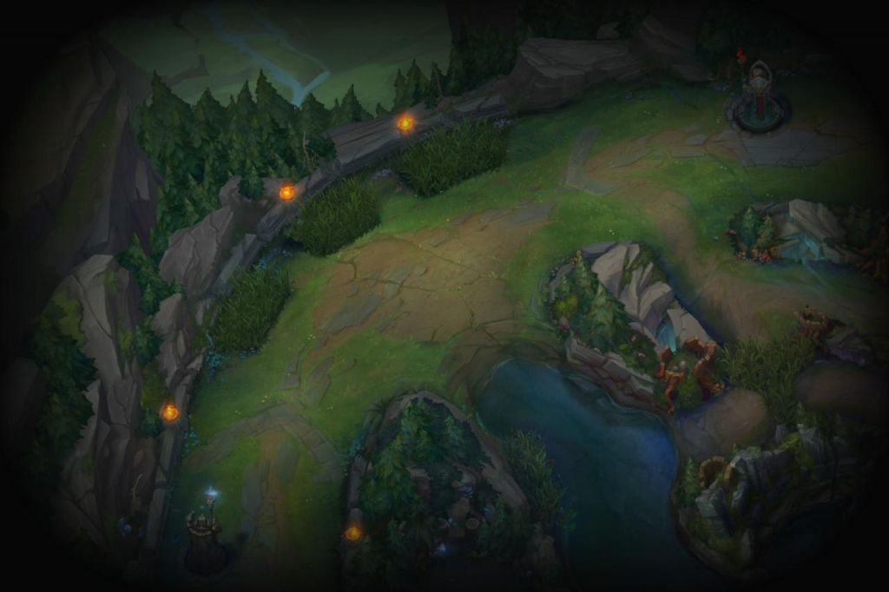
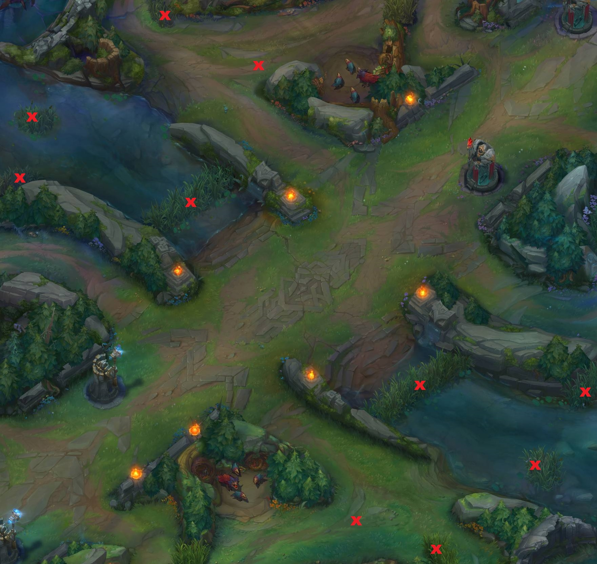

League of Legends es un juego de estrategia por equipos en el que dos equipos de cinco campeones se enfrentan para ver quién destruye antes la base del otro. Elige de entre un elenco de 140 campeones para realizar jugadas épicas, asesinar rivales y derribar torretas para alzarte con la victoria.
El juego transcurre en un mapa que cuenta con tres canales (top,mid y bot). Además entre los canales el mapa cuenta con una jungla llena
de criaturas que nos daran experiencia al matarlas. Puedes optar por cinco posiciones diferentes en el juego:
Haz clic sobre la imagen para acceder a un tutorial
"El TOP es una posición solitaria, se juega en la línea superior del mapa y generalmente deben estar apartados del equipo. Comúnmente como Top laner solamente nos reuniremos con nuestro equipo después de que derrumbemos la torre que se encuentra delante de nosotros, con nuestro team reunido decidiremos lo que haremos a continuación para poder intentar llegar al nexo enemigo para así conseguir finalmente la victoria. <Volver
El MID es la posición oficial de los personajes AP, pero también puede haber excepciones. Es la línea más corta y la que más ganks (consiste en que otra línea o rol aparezca en tu línea para ayudarte o, si es contrario, matarte) recibe por el hecho de estar de camino entre el TOP y la línea de abajo. Si la finalidad en las TF (teamfights) es hacer daño a distancia, este tipo de MID te aporta una ventaja fundamental, y es que si la teamfight se complica puedes huir rápidamente con tu equipo para evitar darle muertes al enemigo. <Volver
